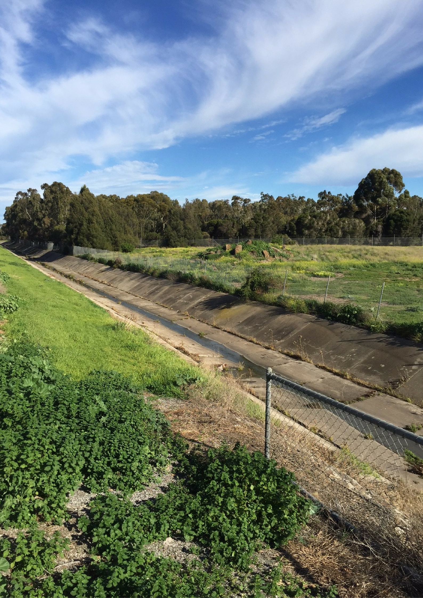

The restoration of Upper stony creek will create a quality urban landscape that rebuilds the biodiversity of this waterway. It will help the community to be livable, enhance ecological value, and retain rainwater for reuse, and can also irrigate local sports fields and green spaces. This reforestation project will provide a cool place for hot weather and immerse in nature. The native jungle will directly improve the health and well-being of the community, and it will have many environmental impacts, including the use of natural systems to clean rainwater, the return of birds and animals to the area, carbon sequestration, and more sun and cooling effects on surrounding houses. The demand for electrical air conditioning is in the summer. Further enhance the environmental protection and development of Melbourne.